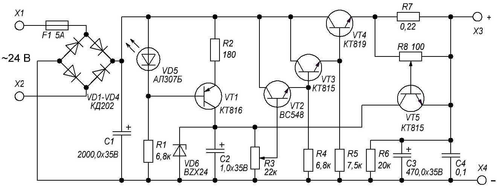

Регулируемый источник питания
(24 В, 3 А)
Блок питания предназначен для получения регулируемого стабилизированного выходного напряжения от 0 до 24 В при токе порядка 1-3 А. В блоке питания предусмотрена защита, то есть ограничение максимального тока при перегрузке.

Рис. 1 - Схема источника питания
Таблица 1
| Обозначение | Наименование | Номинал | Примечание |
|---|---|---|---|
| С1 | Конденсатор электролитический | 2200 мкФ/35 В | |
| С3 | Конденсатор электролитический | 1 мкФ/35 В | |
| С4 | Конденсатор электролитический | 470 мкФ/35 В | |
| С5 | Конденсатор | 100 нФ/35 В | керамический; 0,01-0,47 мкФ |
| F1 | Предохранитель | 5 А | |
| R1 | Резистор постоянный | 180 Ом/0,5 Вт | |
| R2, R4 | Резистор постоянный | 6,8 кОм/0,5 Вт | |
| R3 | Резистор переменный | 22 кОм | 4,7 кОм - 22 кОм |
| R5 | Резистор постоянный | 7,5 кОм/0,5 Вт | |
| R6 | Резистор постоянный | 0,22 Ом/5 Вт | 0,15 - 0,47 Ом |
| R7 | Резистор постоянный | 20 кОм/0,5 Вт | |
| R8 | Резистор переменный | 100 Ом | 47 – 330 Ом |
| Т1 | Трансформатор | 220 В/24 В | С напряжением вторичной обмотки 24-27 В и током 2-3 А |
| VD1-VD4 | Диод выпрямительный | КД202 | Диодный мост 3-5 А / 50 В |
| VD5 | Светодиод | АЛ307Б | Красного свечения |
| VD6 | Стабилитрон | BZX24 | КС527 |
| VT1 | Транзистор биполярный | КТ816 | BD140 |
| VT2 | Транзистор биполярный | BC548 | BC547 |
| VT3, VT5 | Транзистор биполярный | КТ815 | BD139 |
| VT4 | Транзистор биполярный | КТ819 | КТ805,2N3055 |
На транзисторе VТ1 собран стабилизатор тока стабилитрона, т е имеется возможность установки практически любого стабилитрона с напряжением стабилизации менее входного напряжения на 5 В. Это значит, что при установке стабилитрона VD5 допустим ВZX5,6 или КС156 на выходе стабилизатора получим регулируемое напряжение от 0 до приблизительно 4 В, соответственно - если стабилитрон на 27 В , то максимальное выходное напряжение будет в пределах 24-25 В.
Переменное напряжение вторичной обмотки трансформатора должно быть примерно на 3-5 В больше того, которое вы рассчитываете получить на выходе стабилизатора, которое в свою очередь зависит от установленного стабилитрона. Ток вторичной обмотки трансформатора как минимум должен быть не менее того тока, который нужно получить на выходе стабилизатора.
Выбор конденсаторов по емкости: С1 – примерно по 1000-2000 мкФ на 1 А, С4 – 220 мкФ на 1 А. Рабочее напряжение конденсаторов грубо рассчитывается по формуле:
Uраб > ~Uвх: 3 × 4
Например, если выходное напряжение трансформатора 30 В:
Uраб > 30 : 3 × 4
Uраб > 40 [В]
Уровень ограничения тока на выходе стабилизатора зависит от R6 по минимуму и R8 (по максимуму вплоть до отключения). При установке перемычки вместо R8 между базой VТ5 и эмиттером VТ4 при сопротивлении R6 равном 0,39 ом ток ограничения будет примерно на уровне 3 А,
Как понять «ограничение»? Очень просто – выходной ток даже в режиме короткого замыкания на выходе не превысит 3 А, за счет того что выходное напряжение будет автоматически снижено практически до нуля.
Как отрегулировать ток ограничения. Выставить на выходе стабилизатора напряжение на холостом ходу порядка 5-7 В. Затем к выходу стабилизатора подключить сопротивление примерно на 1 Ом мощностью 5-10 Вт и последовательно с ним амперметр. Подстроечным резистором R8 выставить требуемый ток. Правильно выставленный ток ограничения можно проконтролировать выкручивая потенциометр регулировки выходного напряжения на максимум до упора. При этом ток, контролируеммый амперметром должен оставаться на прежнем уровне.
Диоды выпрямительного моста желательно выбирать с запасом по току минимум раза в полтора. Указанные диоды КД202 могут без радиаторов достаточно долго работать при токе 1 А. Установив радиаторы можно обеспечить 3-5 А.
Транзисторы VT1 и VT4 необходимо устанавливать на радиаторы. VT1 будет слегка греться поэтому и радиатор нужен небольшой, а вот VT4 да в режиме ограничения тока будет греться сильно. Поэтому и радиатор нужно подобрать внушительный, можно и вентилятор от блока питания компьютера к нему приспособить.
Один предохранитель на ток примерно на 1 А больше чем ток ограничения блока питания (т е 4-5 А), должен стоять между диодным мостом и трансформатором, а второй между трансформатором и сетью 220 В примерно на 0,5-1 А.
Источники:
radioskot.ru - БЛОК ПИТАНИЯ С РЕГУЛИРОВКОЙ ТОКА И НАПРЯЖЕНИЯ